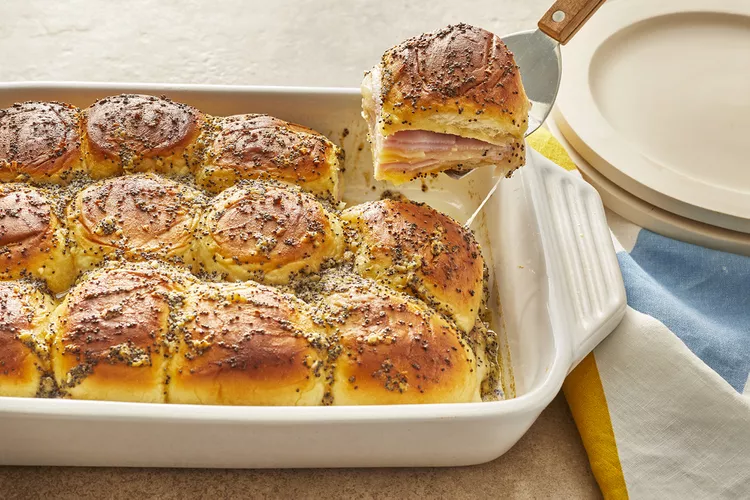

Baked Ham and Cheese Sliders

These baked ham and cheese sliders are the most delicious sandwiches and perfect for any party. They are so good that even the pickiest of eaters will eat these.
- ¾ cup melted butter
- 1 ½ tablespoons Dijon mustard
- 1 ½ teaspoons Worcestershire sauce
- 1 ½ tablespoons poppy seeds
- 1 tablespoon dried minced onion
- 24 mini sandwich rolls
- 1 pound thinly sliced cooked deli ham
- 1 pound thinly sliced Swiss cheese
- Preheat oven to 350 degrees F (175 degrees C). Grease a 9x13-inch baking dish.
- In a bowl, mix together butter, Dijon mustard, Worcestershire sauce, poppy seeds, and dried onion.
- Separate the tops from bottoms of the rolls, and place the bottom pieces into the prepared baking dish.
- Layer about half the ham onto the rolls.
- Arrange the Swiss cheese over the ham, and top with remaining ham slices in a layer.
- Place the tops of the rolls onto the sandwiches.
- Pour the mustard mixture evenly over the rolls.
- Bake in the preheated oven until the rolls are lightly browned and the cheese has melted, about 20 minutes.
- Slice into individual rolls through the ham and cheese layers to serve.